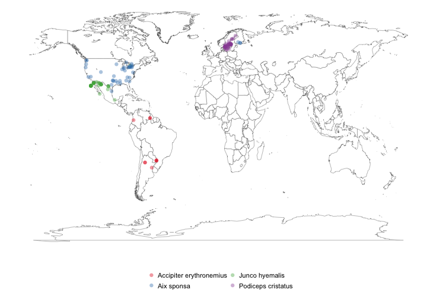
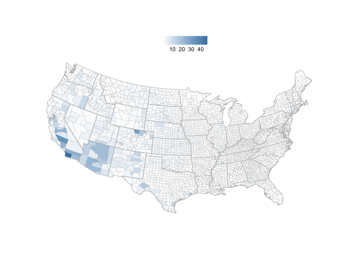

http://everyoneknowsbest.files.wordpress.com/2008/08/bodysculpture.jpg
Scott Chamberlain (@recology_)
http://everyoneknowsbest.files.wordpress.com/2008/08/bodysculpture.jpg


library(RCurl); library(RJSONIO)
dat <- fromJSON(getURL("https://api.github.com/users/hadley/repos"))
library(plyr); library(reshape2)
dat_melt <- melt(ldply(dat, function(x) data.frame(x[names(x) %in% c("name","watchers_count","forks")])))
lm(value ~ variable, data = dat_melt)
library(ggplot2)
ggplot(dat_melt, aes(name, value, colour = variable)) + geom_point() + coord_flip()
# Introduction...
library(taxize)
specieslist <- "Abies procera"
classification(specieslist, db = "itis")
$`Abies procera`
rankName taxonName tsn
1 Kingdom Plantae 202422
2 Subkingdom Viridaeplantae 846492
3 Infrakingdom Streptophyta 846494
4 Division Tracheophyta 846496
5 Subdivision Spermatophytina 846504
6 Infradivision Gymnospermae 846506
7 Class Pinopsida 500009
8 Order Pinales 500028
9 Family Pinaceae 18030
10 Genus Abies 18031
11 Species Abies procera 181835
library(rgbif)
splist <- c("Accipiter erythronemius", "Junco hyemalis", "Aix sponsa", "Podiceps cristatus")
out <- occurrencelist_many(splist, coordinatestatus = TRUE, maxresults = 40)
gbifmap_list(out)

library(rbison)
out <- bison(species = "Helianthus annuus", type = "scientific_name", count = 500)
bisonmap(input = out, tomap = "county")

print("foo bar")
## [1] "foo bar"
{kind=link}